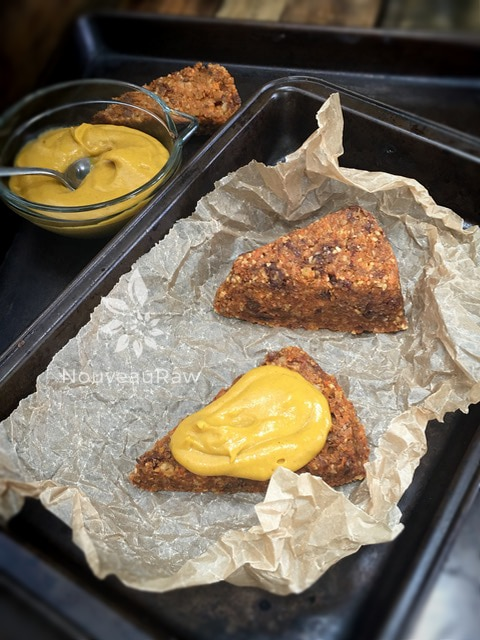
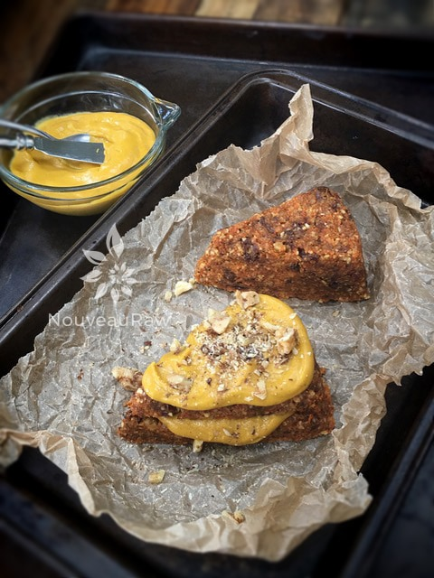

Cinnamon Orange Carrot Scones
These scones are a slight cross between cake, muffins, and scones but I settled on titling them scones. As you glide your fork into the scone, you will notice a little resistance from the delicate outer crust that was formed while “baking”… but only to be met with a moist center that is screaming to be eaten. The creamy
Maple Pumpkin Butter Spread…… helps the fork glide right on through, giving you a little taste of heaven as you take in forkful after forkful.
Warming Spices
I have to say that this dessert is perfect for those times that you want something warm in your belly. They are especially wonderful if enjoyed right out of the dehydrator but when I am talking about warm things in the belly, I am also referring to the spices used in this recipe.
If you are new to the raw lifestyle, there are ways to help “warm” up your dishes without having to cook them. In fact, I did a quick post on just that. Please click (
here) if interested. For this treat, I used cinnamon and ginger which are both warming spices. Combine those with moist carrots, dates, orange juice, and walnuts and you have yourself a downright home comfort food.
I choose to use carrot pulp as the base of these scones. I made a huge pot of veggie soup for my girlfriend which required 4 cups of fresh carrot juice. That left me with an abundance of carrot pulp, so I got busy creating this recipe. This was one of the many treats that I made using it. You can use grated carrots instead of carrot pulp if you wish but keep in mind that there will be more moisture, so you will need to dial back on the almond milk.
To really take these scone to the next level in the yum department, I must insist that you try them with my
Maple Pumpkin Butter Spread…. my goodness. (shakes head in disbelief) That stuff will knock your apron right off. I do hope you enjoy this recipe as much as we did. Please comment b
yields 5 (1/2 cup measurement)
Hand Mix:
- 1/2 cup raisins
- 1/3 cup raw walnuts, soaked
Frosting:
Preparation:
- Combine the almond meal, carrot pulp, flax meal, orange juice, almond milk, date paste, cinnamon, ginger, and salt in a food processor. Process to mix.
- If you don’t have almond milk, you can use the carrot juice that is left from making the carrot pulp.
- Add raisins and walnuts but just pulse them into leave texture.
- Transfer the batter onto the teflex sheet that comes with the dehydrator. Shape into a circle and make it about 1 1/2″ high.
- Cut into even triangles and separate, placing the scones on the mesh sheet that comes with the dehydrator.
- Or you can do what I did… I used a pan similar to this one, click (here). It’s called a Cavity Cake Mold. It’s not required by any means, but it sure made the job nice and easy. See photo below.
- Dehydrate at 145 degrees (F) for 1 hour to set the crust. Then reduce to 115 degrees (F) and continue drying for 4 hours or longer. The outside should be firm but moist on the inside.
- Slice in half and smoother with frosting. Enjoy!
- Store extras in the fridge for 5-7 days.
Culinary Explanations:
- Why do I start the dehydrator at 145 degrees (F)? Click (here) to learn the reason behind this.
- When working with fresh ingredients, it is important to taste test as you build a recipe. Learn why (here).
- Don’t own a dehydrator? Learn how to use your oven (here). I do however truly believe that it is a worthwhile investment. Click (here) to learn what I use.
Slice in half and pile on the goodness.


© AmieSue.com